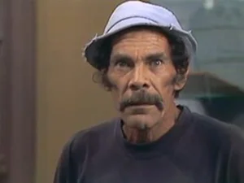

Seu Madruga

Intérprete: Ramón Valdés
Dubladores: Carlos Seidl (Chaves clássico, Gábia e desenho) e Marco Moreira (desenho)
Caracterização: Nenhuma. Este personagem é interpretado por um ator com um carisma e simpatia arrojadas: Ramón Valdés, o qual nunca precisou de nenhum figurino ou alfaiate.
Vestuário: Jeans gastados e desbotados (quando isso não era moda de riquinhos), camisa desbotada que algum dia foi preta, gorro azul, jeans e tênis já gasto com o tempo.
Personalidade: Seu Madruga é um homem maduro que ficou viúvo há 9 anos atrás quando ao nascer de sua filha, a Chiquinha, sua mulher optou por urgência a vida de sua filha no lugar da sua. Seu Madruga é um homem inculto, gente simples do povo ; Dona Clotilde o define euforicamente como “um homem em bruto”; Dona Florinda disse dele quase o mesmo: “É um bruto”.
Já faz muitos anos que a crise o deixou sem emprego, porém Dona Florinda insiste que não é “a crise” e sim a “acomodação”… Seu Madruga faz pequenos e diversos “bicos” (empregos temporários) aqui e ali, ou seja, Seu Madruga é “mil utilidades”; Talvez para Dona Clotilde ele seja apenas “999”, já que para ela não tem sido possível “usá-lo”. Seu Madruga define sua situação de não conseguir trabalho como um favor que faz aos mais jovens, uma “nobre atitude que ele vem tomando desde seus 15 anos”. “Não há trabalho ruim, o ruim é ter que trabalhar”, disse.
Seu Madruga procura ser tolerante com o Chaves, já que de alguma maneira vê retratada nele sua própria infância, porém o pobre Chaves e suas trapalhadas e perguntas acabam o tirando da tranqüilidade e levando-o a dar o concebido “cascudo” (golpe na cabeça com as falanges medianas da mão). E claro, o Chaves chora com o seu clássico “pi pi pi pi” e vai buscar a tranqüilidade em seu barril.
E efetivamente Seu Madruga é vítima da impaciência. Mas é que assim é a vida. Tudo é um processo: Dona Florinda perde a compostura e esbofeteia Seu Madruga, e este por sua vez dá cascudos no Chaves, e o Chaves… Oh… acho que aqui se acaba o processo… Bem… o Chaves golpeia o piso com seus clássicos chutes e também golpeia “sem querer querendo” a quem tem a má sorte de passar em sua frente. O mal é que aí quase sempre a vítima é Seu Barriga, o dono da vila.
Seu Madruga vive se escondendo do Seu Barriga para não pagar os quatorze meses de aluguel que lhe deve. É um cínico, na verdade ele tem vergonha, mas agüenta como os machos porque nunca tem dinheiro pra pagar.
Bordões: “Que que foi, que que foi, que que há??”, “Só não te dou outra porque…”